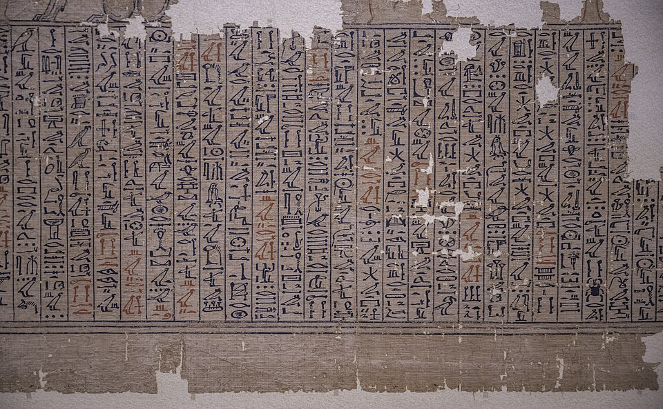

Название
Древнее название сборника — «Книга выхода днём» (дословно «сказания о восхождении во свет»): речь шла не о смерти, а о «выходе» умершего на свет. «Книгой мёртвых» её назвал XIX век, по немецкому Totenbuch. Свиток — собрание погребальных заклинаний: в современной нумерации — около 190 глав, а дошедшие папирусы содержат от нескольких до двухсот с лишним.
Родословная
Заклинания старше самих свитков. Тексты пирамид (Древнее царство; впервые — в пирамиде царя Униса, ок. 2375 до н. э.) были привилегией царя. Тексты саркофагов (Среднее царство) писали на внутренних стенках саркофагов и открыли загробную жизнь для знати. Книга мёртвых (Новое царство, с ок. 1550 до н. э.) — та же магия, но на папирусе и для любого, кто мог заплатить.
Никакого канона
Единого «правильного» списка глав не существовало: каждый свиток заказывали индивидуально, подбирая заклинания под умершего. Порядок и число глав различались от папируса к папирусу, а тексты сами претендовали на древность — в заголовке 30Б главы сказано, что её «открыл» принц Джедефхор ещё в эпоху Микерина. Упорядоченные «саисские» версии появились лишь при XXVI династии, на исходе традиционного Египта.
Папирусы Ани и Хуннефера
Лучший сохранившийся экземпляр — папирус Ани (Британский музей, ок. 1250 до н. э.): свиток длиной около 24 метров с цветными виньетками. Рядом по славе — папирус Хуннефера (тоже в Британском музее). Текст писали иератикой, реже иероглифами, а сцены — суд, врата Дуата, поля — рисовали прямо между строками; картинка была частью магии, а не украшением.
Главные главы и место для свитка
Знаменитейшая — глава 125: взвешивание сердца против пера Маат, то есть сцена суда. Глава 15 говорит с ушебти — фигурками-слугами: «Я здесь!» — и они за хозяина работают на загробных полях. Глава 64 — «выход на огонь»: умерший объявляет себя огнём, который не сгорает в огне Дуата. Готовый свиток клали в гроб или, свернув, между бинтами мумии.